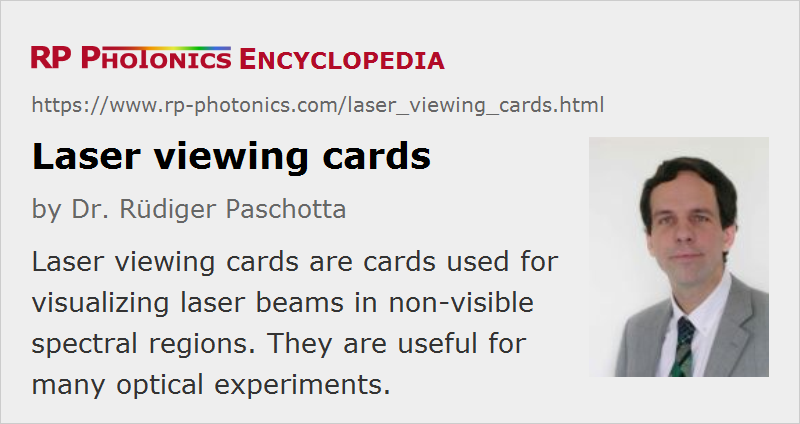

Laser Viewing Cards
Definition: cards used for visualizing laser beams in non-visible spectral regions
Alternative terms: infrared sensor cards, detector cards
German: Laser-Sensorkarten, Infrarot-Sensorkarten
Categories: general optics, photonic devices, light detection and characterization, vision, displays and imaging
How to cite the article; suggest additional literature
Author: Dr. Rüdiger Paschotta
When working with laser beams in non-visible spectral regions (i.e., with infrared light or ultraviolet light), it is often essential to have some way of making beam positions and beam profiles visible. A low-cost way of doing this is using laser viewing cards, also called infrared sensor cards or detector cards. Such a tool – often made of a plastic (e.g. polyester) with the size of a credit card or larger – has a photosensitive area which emits visible light (or in some cases changes its color) when it is hit by laser light in a certain wavelength region. It therefore becomes possible e.g. to follow the path of a laser beam and to check whether it hits optical components at the desired positions.
Judging the beam intensity profile and beam diameter, however, is hardly possible with such a simple tool, partly due to the highly nonlinear detection characteristics and scattering within the material. (Typically, the observed spot appears larger if the laser power is increased.) For such purposes, one may use infrared viewers (in case of infrared light), which however are far more expensive.
Operation Principles of Sensor Cards
Laser viewing cards can be based on very different operation principles, which are discussed in the following sections and lead to very different usage characteristics.
Phosphorescence
The probably most common sensor cards for the near infrared wavelength region (used e.g. for working with YAG lasers) contain some kind of phosphor. Before use, the phosphor must be “charged” by illumination with visible light, i.e., sunlight or artificial light. The material then generates a low level of phosphorescence (afterglow), which can hardly be recognized. However, when hit by infrared light, the material releases the energy stored during the charging process much more quickly, and the illuminated spot can be seen (often in orange color) with the naked eye. This visual impression lasts only until the stored energy has been exhausted; one then needs to recharge the card or just move the laser spot to another location which has not yet been used.
Depending on the used phosphor, the wavelength region with good sensitivity can be narrower or broader. The wavelength range specified by the manufacturer often includes regions where the sensitivity is actually very low, while quoted numbers for the sensitivity often apply to wavelengths with maximum sensitivity. Under ideal conditions (optimal wavelength region, short-term use after charging the card with bright visible light), some cards allow one to detect infrared intensities of the order of a few μW/cm2, whereas in other cases one requires multiple mW/cm2.
Upconversion Fluorescence
There are rare-earth-doped materials which can upconvert infrared radiation to the visible region. Such materials do not need any charging before use. However, the upconversion process requires higher optical intensities, i.e., the sensitivity of such cards is substantially lower. (It can actually be better with pulsed light.)
Direct Generation of Fluorescence
Laser viewing cards for ultraviolet light can directly produce visible fluorescence light and do not need any charging before use. Because such processes can be very efficient, the achieved sensitivity is usually quite high. In some cases, there is also substantial level of phosphorescence, which may last for several minutes.
Thermochromic Materials
Particularly for use in the mid-infrared spectral region, thermochromic detection cards are available. These contain a material (e.g. a liquid-crystal film or a material containing certain pigments) which changes its color when it is heated to an elevated temperature. Depending on the type of material, the color may change e.g. from green to brown or black, or from dark to white.
This operation principle means that the laser intensity must be high enough (e.g. above 100 mW/cm2) to raise the local temperature by some tens of Kelvins. On the other hand, the laser intensity should not be far higher, because otherwise the material could be destroyed. Therefore, the usable dynamic range is fairly small – often with a factor less than 10 between the damage threshold and the minimum detectable intensity.
The visible spot remains until the material has cooled down again. That process may be accelerated by pressing the card against some cool metal part, for example. If the ambient temperature is too high, it may not be possible to use such a card.
An advantage of the thermochromic operation principle is that it works in a very wide wavelength range, because only sufficiently high absorption of the laser light is required to achieve the temperature rise. For shorter wavelength, however, other cards (e.g. based on phosphorescence) are normally preferred due to their much higher sensitivity and larger dynamic range.
Practical Aspects
Laser viewing cards are often used in reflective mode, i.e., one observes the generated visible light on the same side where the laser beam hits the card. Some cards, however, can also be used in transmission, i.e., one observes on the opposite side. The sensitivity is usually lower for use in transmission.
In some cases, a sensor card contains different photosensitive areas, e.g. for different wavelength regions or different sensitivities.
Sensor cards often also work for visible light, but in this case there is normally no advantage over simply using a piece of paper, for example, as a scattering surface.
Note that part of the incident laser power can be reflected by the top surface of a sensor card, and this can cause a safety hazard when working without laser goggles, because laser light may be directed towards an eye.
Most detector cards are just held with the hand or possibly fixed in some clamp, but there are also cards specially made for mounting in standard optics posts. Mounting a sensor card at a fixed position is of course less appropriate for cards which need recharging; one would rather move such a card around in order to use different spots of its active area.
Related Devices
There are also photosensitive ceramic discs which can be used as infrared detectors. Such a disk may be mounted in a ring, sometimes with an attached handle. In other cases, the photosensitive phosphor is deposited on a glass or an adhesive foil.
Suppliers
The RP Photonics Buyer's Guide contains 15 suppliers for laser viewing cards. Among them:
Questions and Comments from Users
Here you can submit questions and comments. As far as they get accepted by the author, they will appear above this paragraph together with the author’s answer. The author will decide on acceptance based on certain criteria. Essentially, the issue must be of sufficiently broad interest.
Please do not enter personal data here; we would otherwise delete it soon. (See also our privacy declaration.) If you wish to receive personal feedback or consultancy from the author, please contact him e.g. via e-mail.
By submitting the information, you give your consent to the potential publication of your inputs on our website according to our rules. (If you later retract your consent, we will delete those inputs.) As your inputs are first reviewed by the author, they may be published with some delay.
See also: infrared viewers, laser beams, infrared light
and other articles in the categories general optics, photonic devices, light detection and characterization, vision, displays and imaging
|  |
If you like this page, please share the link with your friends and colleagues, e.g. via social media:
These sharing buttons are implemented in a privacy-friendly way!